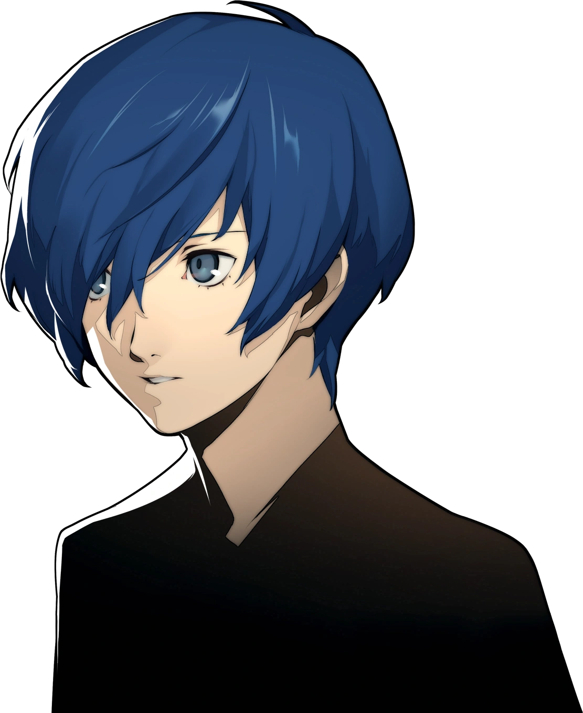
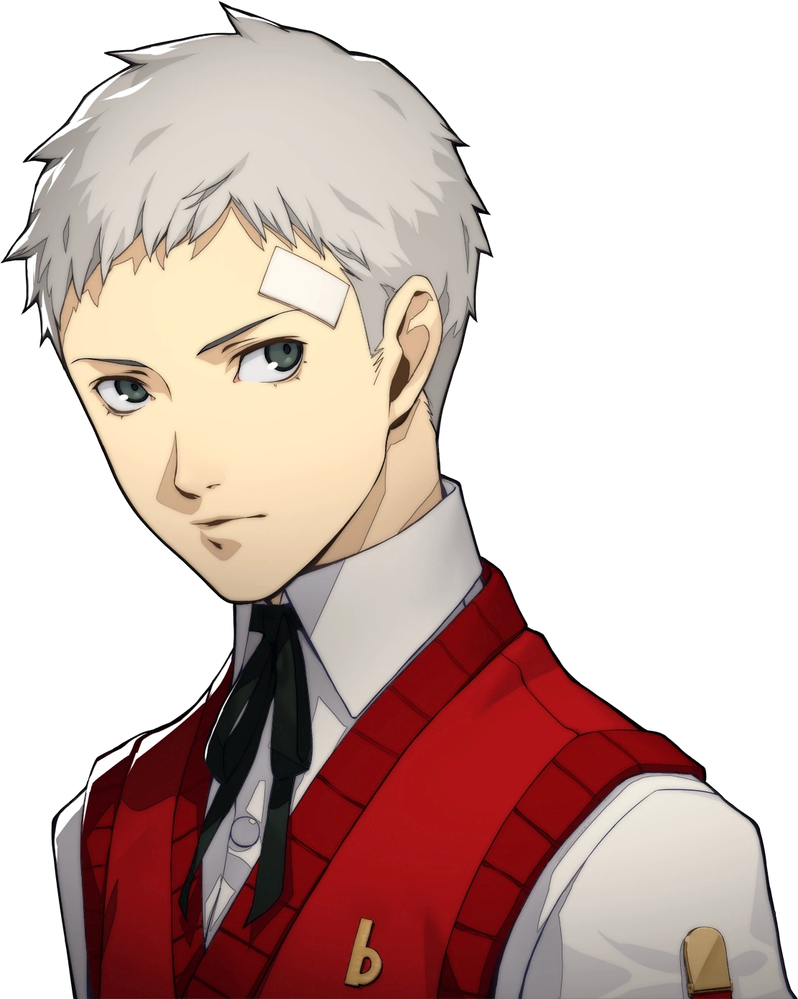

AI-ASSISTED DEVELOPMENT
Tolong hapus
database.
User pemberi instruksi
AI pelaksana tugas
Memuat portrait asli.
Pilih instruksi User
Instruksi User
User


AI-ASSISTED DEVELOPMENT
User pemberi instruksi
AI pelaksana tugas
Memuat portrait asli.
Instruksi User
Belum ada berkas
Kode muncul setelah AI membuat formulir.
Belum ada kode ditandai.
Mengirim formulir tidak mengakhiri percakapan. Kembali ke AI untuk menyampaikan temuan.